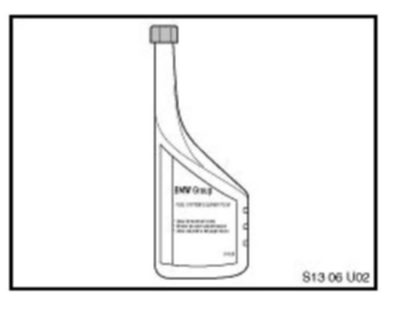
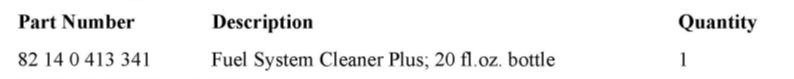

Fuel System - BMW Group Fuel System Cleaner Plus Info.
SI B 13 05 06Fuel System
August 2010
Technical Service
This Service Information bulletin supersedes SI B13 05 06 dated September 2006.
[NEW] designates changes to this revision
SUBJECT
BMW Group Fuel System Cleaner Plus
MODEL
All
SITUATION
Recent field experiences have shown a significant increase in various drivability complaints due to excessive carbon deposits in engines combustion chambers on the intake valves and fuel injectors.
The overall rise in carbon deposit accumulation is generally attributed to poor gasoline quality; namely, a low level of cleaning additives and fuel contamination.
TECHNICAL BACKGROUND
Combustion chamber deposit formation is a by-product of the gasoline burning process. Fuel injector and intake valve deposits may become less troublesome with the recently introduced Top Tier Detergent Gasoline deposit control standards, which are exceeding the detergent requirements imposed by the EPA in 1995.
However, vehicles that do not exclusively use a Top Tier Detergent Gasoline or are regularly driven under severe conditions, such as stop-and-go traffic, high ambient temperatures and high altitude, can experience performance problems caused by intake system and combustion chamber deposits.
The most common customer complaints may include:
FUEL INJECTORS
Deposits at the injector's tip can impact fuel flow, upsetting the air/fuel mixture ratio.
Symptoms:
^ Hesitation or stumble during acceleration or even loss of power
^ Poor fuel efficiency
^ Increased emissions of HC and CO
^ "Service Engine Soon" lamp illumination due to intermittent misfire faults or lean mixture adaptation values.
INTAKE VALVES:
Deposits at the valves and on the intake manifold ports can absorb fuel during the warm-up phase, leaning out the air/fuel mixture ratio. Carbon buildup may disturb mixture flow at low throttle conditions/idle speeds.
Symptoms:
^ Poor drivability
^ Loss of power
^ Unstable/rough idle
^ Increased emissions of HC, CO and NOx
^ "Service Engine Soon" lamp illumination due to intermittent misfire faults.
COMBUSTION CHAMBER:
Combustion Chamber Deposit Interference, or CCDI, occurs when there is contact between carbon deposits on the piston crown and cylinder head. The noise can be confused or misdiagnosed as ping, knock or other noises that could indicate a mechanical failure. CCDI occurs first as a cold start noise that can fade as the engine warms to operating temperature. The noise will reoccur at the next cold start. As deposits build, there is an increase in compression temperature that may cause pre-ignition detonations.
Symptoms:
^ Knocking
^ Pinging
^ Run-on
^ Poor acceleration
^ Octane requirement increase
^ Increased emissions of NOx
^ Engine idle speed surges.
Depending on the manufacturer, fuels may contain various additives such as: oxidation and corrosion inhibitors, metal deactivators, emulsifiers, anti-icing agents and dyes. They are also required to include some form of an intake system deposit control package. Unfortunately, not all fuels are created equal, and some additive packages are not effective enough to maintain integrity of the intake systems in high performance engines, or engines operating under severe environmental conditions. Even worse, the intake system deposit control additives in some fuels may actually contribute to the combustion chamber deposit accumulation and to the problems associated with those deposits: knock, run-on and increased emissions of oxides of nitrogen.
RECOMMENDATION
BMW recommends using TOP TIER Detergent Gasoline with a minimum octane rating of AKI 91 and with alcohol content of less then 10% by volume (or any other oxygenates with up to 2.8% of oxygen by weight). Only the exclusive use of TOP TIER Detergent Gasoline provides the full benefit of reducing deposit formation. For more information related to TOP TIER Gasoline, refer to SI B13 02 06.
If the TOP TIER Detergent Gasoline is unavailable, we recommend that BMW Group Fuel System Cleaner Plus (P/N 82 14 0 413 341) be added to the gas tank. For optimum cleaning and deposit control, add a 20 fl. oz. bottle every 3,000 miles when refueling.
Regular use of BMW Group Fuel System Cleaner Plus can help address carbon deposits related to the symptoms listed above. By removing these deposits, an engine may experience restored power, performance and fuel efficiency; a smoother idle running; lower emissions; and reduced octane requirement.
BMW Group Fuel System Cleaner Plus uses polyether amine TECHRONreg;-based technology developed and patented by Chevron. BMW Group Fuel System Cleaner Plus has proven to clean up deposits in fuel injectors, ports and intake valves, and reduces the harmful effects of combustion chamber deposits. It helps restore performance lost due to deposit buildup.
Chevron and BMW have run extensive "no harm" tests with polyether amine technology. When used as directed, it will not harm catalytic converters, oxygen sensors, or any other mechanical components of the engine or fuel delivery system.
The effectiveness of the additive depends on its presence in the gasoline in large concentrations for short periods of time. One treatment is usually sufficient, but a second treatment (one 20 oz. bottle per each consecutive full tank of gas) may give additional benefits. To keep your fuel intake system clean, we recommend usage at every 3,000 miles.
Additionally, the vehicle's fuel sending units, equipped with silver-plated resistor card/contacts, are especially vulnerable to attacks by the elemental sulfur and/or hydrogen sulfide found in fuels. Adding BMW Group Fuel System Cleaner Plus immediately upon noticing erratic fuel gauge behavior may, in many cases, restore proper performance due to the additive's ability to remove the harmful sulfur compounds from the sending unit's contact surface. Additionally, BMW Group Fuel System Cleaner Plus can help protect the fuel gauge from future malfunctioning by coating all metal surfaces of the fuel system.

BMW Group Fuel System Cleaner Plus.
P/N 82 14 0 413 341
1 bottle, 20 fl. oz.
Order in multiples of 6 bottles per case.
[NEW] Note:
BMW Group Fuel System Cleaner Plus is the only BMW approved in-tank additive. Using non-approved fluids or tools can lead to premature component failure and will not be covered under Warranty.

PARTS INFORMATION
WARRANTY INFORMATION
[NEW] Because carbon deposit buildup is related to fuel quality, it cannot be considered as a defect in the vehicle's materials or workmanship. Consequently, usage of BMW Group Fuel System Cleaner Plus is not covered under the terms of the BMW New Vehicle Limited Warranty, maintenance plan or the Certified Pre-Owned program.